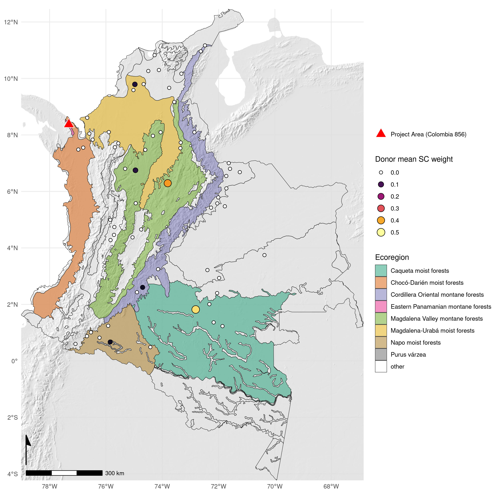

Response to West et al. (2023)
Hugh A. Graham ![]()
Andrew M. Cunliffe
Edward T.A. Mitchard
Javier Ruiz Ramos
Leonardo Sáenz
David F.R.P. Burslem
Christopher Philipson
eLetter
Avoided deforestation conservation projects necessitate comparisons between observations in protected forests and what-would-have-happened if the project did not exist (often referred to as the baseline, or counterfactual scenario)1. Nevertheless, it is imperative that forest carbon projects deliver the carbon emission reductions they report, and there are various methods that can be used to estimate these counterfactual scenarios. West et al.2 used the synthetic control method to choose pools of controls with similar covariate structure to avoided unplanned deforestation conservation project areas; they do not consider other methodologies such as planned avoided deforestation, or improved forest management. Synthetic controls were calculated from the mean deforestation rate of pools, weighted by covariate similarity with the project. We agree that the synthetic control method could potentially improve the evaluation of forest carbon projects. However, synthetic controls are also vulnerable to “gaming” or bias through inappropriate donor pool design/sampling and such econometric statistical methods require further context-specific refinement1 before they can improve upon existing approaches.
West et al.2 claim that most forest carbon projects overestimate avoided deforestation or do not significantly reduce deforestation. These conclusions are poorly supported by their analysis because:
The implemented synthetic control approach can suffer from bias3 due to substantial and incompatible differences between deforestation drivers, forest type and (bio)geography that are not adequately captured by the structure of covariates that are used to form the synthetic control. Important covariates are ignored, such as distance to roads and rivers4,5, fire risk6, or indicators of forest structure7 that predict biomass, timber value and logging effort. Using the authors’ code, we extracted the locations of controls used to create the synthetic control for project-856 (Figure 1), located in Colombia’s Pacific-montane-forest. No weighted donors were in the same political jurisdiction or ecoregion as the project and the highest weighted donor (0.46) was in the Amazon, 900 km away. We have also attempted to reproduce the synthetic controls for all considered project areas; interactive maps of these locations are presented at https://permian-global-research.github.io/science-letter-west-et-al/.
Calculations derived from Global Forest Change (GFC)8 inherit known sensitivity and accuracy issues9,10. It is inappropriate to compare GFC-based calculations with those reported by projects, which are better calibrated for local contexts, because meaningful comparisons require deforestation rates to be derived using identical methods. Further, it is accepted that GFC is inappropriate for site-level deforestation assessment, in isolation10,11.
West et al.2 do not demonstrate that synthetic control counterfactuals are more accurate than project methods, undermining their ability to interpret differences between the synthetic control and project-reported deforestation rates.

The adoption of econometric methods to evaluate the efficacy of voluntary carbon projects is an important development in the field1, yet these methods need improvement. Critically, the drivers of deforestation are complex and highly variable across space and time. We believe that there is a need to more carefully consider the connections between spatial and econometric statistical techniques, in the context of remote sensing, to maximise the accuracy and utility of these methods13.
No method of reconstructing a counterfactual can claim to represent absolute truth. In order to improve the evaluation of avoided deforestation conservation projects, one potential way forward could be to adopt a simulation framework to benchmark the efficacy of synthetic controls alongside alternative methods. Simulations to reconstruct counterfactuals on non-project areas will provide quantitative metrics for counterfactual reconstruction accuracy. We hope this letter will stimulate further discussion on this topic and encourage the development and adoption of improved inference methods in voluntary carbon projects.